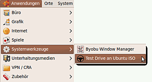
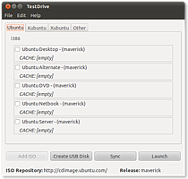

TestDrive
Dieser Artikel wurde für die folgenden Ubuntu-Versionen getestet:
Ubuntu 16.04 Xenial Xerus
Ubuntu 14.04 Trusty Tahr
Zum Verständnis dieses Artikels sind folgende Seiten hilfreich:
TestDrive ist ein Projekt von Dustin Kirkland, welches auf sehr einfachem Wege ermöglicht, ISO-Dateien auszuprobieren.
Sowohl für Tester und Entwickler – aber auch für „normale“ Anwender – ist es sehr einfach und sicher, neue (und/oder nicht installierte) Versionen Ubuntus und anderer Linux-Distributionen in einer Virtuellen Maschine zu testen. Das erklärte Ziel des Projekts ist „eine sehr einfache Methode bereitzustellen, die es nicht-technikaffinen Ubuntu-Anwendern erlaubt, die jeweilige Ubuntu-Entwicklungsversion zu testen und Feedback darüber geben zu können“.
Das an sich ist nichts Neues, das Konzept von TestDrive ist dabei jedoch sehr einfach: Es kann so konfiguriert werden, jede per URL zu erreichende ISO-Datei mit einem Klick herunterzuladen und in einer Virtuellen Maschine starten zu lassen. Alternativ kann man auch heruntergeladene ISO-Abbilder mit TestDrive testen. Es verwendet dazu KVM („Kernel-based Virtual Machine“) und das Tool rsync, welches den Download des ISO-Abbilds bewerkstelligt.
Installation¶
TestDrive ist aus den Paketquellen installierbar [1] .
testdrive (universe)
 mit apturl
mit apturl
Paketliste zum Kopieren:
sudo apt-get install testdrive
sudo aptitude install testdrive
TestDrive benutzen¶
Man kann TestDrive auf zweierlei Art nutzen: Grafisch über das Menü oder per Texteingabe über das Terminal. Die Nutzung des Terminals ermöglicht dabei eine erweiterte Nutzung; dieser Weg bietet sich an, wenn man die ISO-Abbilder schon heruntergeladen hat (siehe file-Befehl unter TestDrive im Terminal nutzen).
TestDrive starten¶
 Es öffnet sich nach dem Start von TestDrive ein Terminalfenster, welches sechs Optionen zur Auswahl anbietet. Die ersten fünf laden automatisch die jeweils in Entwicklung befindliche Ubuntu-Version.
Mit der Option 6 ist es möglich, sowohl andere als die in der Auswahl angegebenen Ubuntu-Versionen, als auch Ubuntu-fremde Linux-Distributionen zu testen. Einzige Voraussetzung ist, dass das jeweilige ISO-Abbild über eine URL erreichbar ist.
1. Ubuntu Desktop (lucid) 2. Ubuntu Server (lucid) 3. Ubuntu Alternate (lucid) 4. Ubuntu DVD (lucid) 5. Ubuntu Netbook Remix (lucid) 6. Other (prompt for ISO URL) Select an ISO to testdrive:
Wurde bei einer der Optionen 1 bis 5 schon einmal eine ISO-Datei heruntergeladen und diese befindet sich noch im entsprechenden Verzeichnis, so zeigt TestDrive dies an (siehe nebenstehendes Bild – hier Option 1)
Sobald der Download abgeschlossen ist, startet KVM bzw. QEMU, ein freier Emulator und Virtualisierer, welcher das heruntergeladene ISO-Abbild ausführt. Sollte der Download unterbrochen werden, so startet TestDrive diesen automatisch wieder, wenn es erkennt, dass schon ein halbfertiger Download des gleichen ISO-Abbildes stattfand.
TestDrive im Terminal nutzen¶
TestDrive kann auch über ein Terminal [3] gestartet werden. Dazu nutzt man entweder rsync:
testdrive -u rsync://Pfad_zur_.iso
oder den http-Befehl:
testdrive -u http://Pfad_zur_.iso
oder den file-Befehl:
testdrive -u file:///Pfad_zur_.iso ## z.B. testdrive -u file:///home/$USER/ubuntu-desktop-386.iso
Dieser Befehl ermöglicht es, mit Testdrive schon heruntergeladene ISO-Abbilder auszuführen. Dies funktioniert auch, wenn diese Abbilder nicht mit Testdrive geladen wurden. Hat man also ein ISO-Abbild, so muss man Testdrive im Terminal mit dem file-Befehl nur mitteilen, wo es dieses Abbild findet.
TestDrive anpassen¶
Das Programm kann über die Konfigurationsdatei /etc/testdriverc angepasst werden. Allerdings sollte man diese im Terminal [4] vorher ins Homeverzeichnis kopieren:
cp /etc/testdriverc ~/.testdriverc
dort editieren [3], und zurück kopieren.
TestDrive mit GUI¶
TestDrive kann auch mit Grafischer Benutzeroberfläche (GUI) intuitiver bedient werden.
TestDrive starten¶
Gestartet wird TestDrive mit GUI wie unter TestDrive starten angegeben. Möchte man TestDrive im Terminal wie bisher über das Terminal nutzen, so startet man das Programm wie in TestDrive im Terminal nutzen beschrieben über das Terminal.
TestDrive benutzen¶
Nach dem Start sieht man das Hauptfenster von TestDrive (siehe Bild 1). Dort kann man über die Reiter "Ubuntu", "Kubuntu" oder "Xubuntu" auswählen, welche Desktopumgebung sowie welches Derivat (Desktop, Alternate, Netbook, Server) man testen möchte. Zum Testen selbst wählt man per Haken eine Option aus und klickt unten im Fenster auf "Sync". Dadurch lädt TestDrive die voreingestellte Version (im Beispiel Desktop Maverick) herunter und zeigt dies auch mit einer sich erhöhenden Prozentzahl an (siehe Bild 2).
Ist der Download abgeschlossen, wechselt die vormals leere Zeile CACHE: [empty] unterhalb der Ubuntuversion auf CACHE: [2010-10-07 18:25:01] (siehe Bild 3). Dies zeigt den Zeitpunkt der Erstellung des heruntergeladenen ISO-Abbildes auf den Servern Ubuntus an. Steht nun unter der Ubuntu-Version die Cache-Zeile mit einem Datum, so setzt man einen Haken davor und klickt nun auf "Ausführen". Dies startet dann die Ubuntu-Version in einer virtuellen Maschine.
Einstellungen¶
Über das Menü erreicht man die Einstellungen. Das Einstellungsfenster unterteilt sich in drei Reiter: "Allgemein", "Virtualisation" und "Distributionen".
Im Reiter "Allgemein" findet man Einstellungen zum von TestDrive genutzten Verzeichnis, welches man auch mit einem einfachen Klick auf "Säubern" löschen kann (im Gegensatz zu den älteren Versionen von Testdrive, siehe #Speicherplatz). Auch kann man im Reiter "Allgemein" die Ubuntu-Versionen, die Architektur sowie das Ubuntu-Repository auswählen (siehe Bild 4).
Im Reiter "Virtualisation" findet man Einstellungen zu der genutzten virtuellen Maschine (VM). So kann man dort neben dem sogenannten Hypervisor (Virtualisierungssoftware) auch die Optionen der VM wie RAM- und Festplattenspeicher sowie die Anzahl der CPUs auswählen (siehe Bild 5).
Im Reiter "Distributionen" kann man die einzelnen Ubuntu-Derivate per Haken aus- oder abwählen. Unter dem Menüpunkt "Andere" lassen sich andere Linux-Distributionen aufbewahren. (siehe Bild 6).
Weitere Funktionen¶
Über das TestDrive-Menü "Datei -> Neu" kann man ein ISO-Abbild hinzufügen. Dazu gibt man eine freiwählbare Erklärung (z. B. Name) an, gefolgt von der URL zu dem gewünschten ISO-Abbild. Man wählt nun noch die Synchronisierungsmethode (rsync" oder zsync zum Herunterladen, file bei einer lokal vorhandenen ISO) und klickt abschließend auf "Hinzufügen" (siehe Bild 7). Dies zeigt das eben erstellte ISO-Abbild im TestDrive-Hauptfenster an, so dass man diese dann herunterladen (siehe Bild 8) oder ausführen kann. Gleiches passiert über die Schaltfläche "ISO hinzufügen" im Hauptfenster.
Über das TestDrive-Menü "Datei -> Öffnen" kann man ein schon vorhandenes ISO-Abbild direkt auswählen. Es startet nach der Auswahl automatisch die virtuelle Maschine mit dem ausgewählten Abbild.
Auch kann man mit den heruntergeladenen ISO-Abbildern einen USB-Stick befüllen. Es wird dabei auf den Ubuntu-eigenen Startmedienersteller zurück gegriffen. Dazu wählt man die gewünschte ISO per Haken aus und klickt dann auf "USB-Stick erstellen".
Bildersammlung zur GUI¶
|  |
| Bild 1 Hauptfenster von TestDrive |
 |
| Bild 2 Download Ubuntu Maverick Desktop |
| Bild 3 Heruntergeladene Ubuntuversion |
 |
| Bild 4 Einstellungsfenster Allgemein |
| Bild 5 Einstellungsfenster Virtualisation |
| Bild 6 Einstellungsfenster Distributionen |
| Bild 7 ISO-Abbild hinzufügen |
| Bild 8 Download der ISO von Arch Linux |
TestDrive beenden¶
Möchte man QEMU (und damit TestDrive) beenden, so schließt man einfach das QEMU- oder das TestDrive-Fenster.
Speicherplatz¶
TestDrive speichert die heruntergeladenen ISO-Abbilder im Unterverzeichnis ~/.cache/testdrive/ des Homeverzeichnisses. Es werden jeweils das ISO-Abbild und eine kleinere IMG-Datei angelegt. Diese werden nicht gelöscht, wenn man TestDrive (oder QEMU) beendet, so dass diese von Hand gelöscht werden können, sollte man selbige nicht mehr benötigen.
Problembehebung¶
Zum Teil kann es zu Interferenzen zwischen Virtualbox und TestDrive kommen. Dies äußert sich in einer Fehlermeldung beim Start von Virtualbox, wenn man TestDrive in Gebrauch hatte. Dies liegt daran, dass TestDrive per Standard QEMU als Virtualisierung nutzt und damit das KVM-Kernel-Modul geladen ist. Dies kann man entweder temporär entladen (wie auf VirtualBox/Problembehebung beschrieben) oder aber TestDrive anweisen, dauerhaft ebenfalls Virtualbox statt KVM als Virtualisierung zu nutzen.
Um dies zu bewerkstelligen ändern man unter Einstellungen den Hypervisor von KVM auf Virtualbox.

- Erstellt mit Inyoka
-
 2004 – 2017 ubuntuusers.de • Einige Rechte vorbehalten
2004 – 2017 ubuntuusers.de • Einige Rechte vorbehalten
Lizenz • Kontakt • Datenschutz • Impressum • Serverstatus -
Serverhousing gespendet von